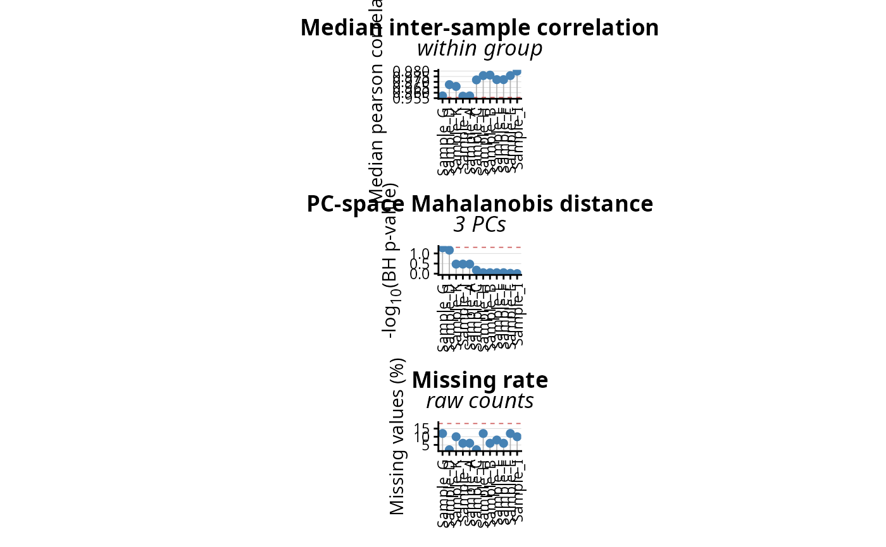

Automatic, threshold-based flagging of low-quality samples. Three orthogonal per-sample
quality metrics are combined: (i) the median correlation of each sample against all the others (or against
the replicates of its own group), (ii) a robust squared Mahalanobis distance computed in the space of the
first principal components, and (iii) the fraction of missing values. Each metric is compared to its own
threshold and a sample is called an outlier when at least min.flags metrics are triggered.
The vector of flagged samples can be passed directly to filter.samples.
detect.outliers(
DEprot.object,
which.data = "imputed",
sample.subset = NULL,
group.column = NULL,
correlation.method = "pearson",
missingness.data = "auto",
n.PCs = 3,
center.data = TRUE,
scale.data = TRUE,
correlation.z.th = -2.5,
correlation.min = NULL,
mahalanobis.padj.th = 0.05,
missingness.z.th = 2.5,
missingness.max = NULL,
padj.method = "BH",
min.flags = 2,
verbose = TRUE
)An object of class DEprot or DEprot.analyses.
String indicating which type of counts should be used for the correlation and the PCA. One among: 'raw', 'normalized', 'norm', 'randomized', 'random', 'imputed', 'imp'. Default: "imputed".
String vector indicating the column names (samples) to keep in the counts table (the 'column.id' in the metadata table). Default: NULL (no subsetting).
String indicating the column of the metadata table defining the sample groups. When provided, the median correlation of a sample is computed only against the other samples of the same group (replicate correlation). Default: NULL (all the samples are used).
String indicating the correlation method to use. Possible options: 'pearson', 'spearman', 'kendall'. Default: "pearson".
String indicating which counts should be used to quantify the missing values. One among: 'auto', 'raw', 'normalized', 'norm', 'randomized', 'random'. With "auto" the first available table among raw, normalized and randomized counts is used. Default: "auto".
Integer indicating the number of principal components used to compute the Mahalanobis distances. Default: 3.
Logical value indicating whether the data should be centered for the PCA. Default: TRUE.
Logical value indicating whether the data should be scaled for the PCA. Default: TRUE.
Numeric (negative) value indicating the robust Z-score below which the median correlation of a sample is considered too low. Default: -2.5.
Numeric value indicating an absolute floor for the median correlation: samples below this value are flagged independently of their Z-score. Default: NULL (not applied).
Numeric value indicating the adjusted p-value threshold applied to the chi-square test of the Mahalanobis distances. Default: 0.05.
Numeric (positive) value indicating the robust Z-score above which the missing rate of a sample is considered too high. Default: 2.5.
Numeric value between 0-1 indicating an absolute cap for the missing rate: samples above this value are flagged independently of their Z-score. Default: NULL (not applied).
String indicating the multiple-testing correction applied to the chi-square p-values. Any method supported by p.adjust. Default: "BH".
Integer indicating the minimum number of metrics that must be triggered to call a sample an outlier. Automatically capped to the number of metrics that could be computed. Default: 2.
Logical value indicating whether messages should be printed. Default: TRUE.
A DEprot.outliers object, containing the per-sample metric table (metrics), the vector
of the flagged samples (outliers) and the diagnostic plots (plot, plot.list).
The three metrics are deliberately independent: the correlation captures samples whose global
expression profile does not resemble the others, the Mahalanobis distance captures samples lying far from
the bulk of the data in the reduced PC space, and the missing rate captures samples with a poor identification
depth. Because the principal components returned by perform.PCA are orthogonal by construction, the
Mahalanobis distance is computed with a diagonal covariance matrix estimated robustly (median and MAD of
each PC): this avoids the singularity that a full covariance matrix would generate whenever the number of
samples is close to, or smaller than, the number of components. The resulting squared distances are compared
to a chi-square distribution with as many degrees of freedom as the components effectively used.
The correlations are computed with use = "pairwise.complete.obs", so that unimputed tables do not
collapse to the few proteins quantified in all the samples. All the Z-scores are robust
((x - median(x)) / mad(x)) and are always computed across all the samples, also when
group.column is provided.
outliers <- detect.outliers(DEprot.object = DEprot::test.toolbox$dpo.imp,
which.data = "imputed",
group.column = "condition")
#> 0 sample(s) flagged as outlier out of 12.
outliers
#> DEprot.outliers object:
#> Samples analyzed: 12
#> Data used: imputed (log2)
#> Metrics available: correlation, mahalanobis, missingness
#> Flags required: 2
#> Outliers: none
#>
#> Sample metrics:
#> column.id group median.correlation correlation.z mahalanobis.distance
#> 1 Sample_G FBS 0.9571194 -2.28323106 13.11027189
#> 2 Sample_D FBS 0.9674753 -0.69085677 11.04656514
#> 3 Sample_K 6h.DMSO 0.9658027 -0.94804552 6.44929673
#> 4 Sample_J FBS 0.9568579 -2.32343631 5.85340192
#> 5 Sample_A FBS 0.9571194 -2.28323106 5.46679120
#> 6 Sample_C 6h.10nM.E2 0.9718504 -0.01812733 3.37997454
#> 7 Sample_H 6h.DMSO 0.9757909 0.58778255 1.42720076
#> 8 Sample_B 6h.DMSO 0.9762484 0.65812475 1.41423352
#> 9 Sample_L 6h.10nM.E2 0.9720862 0.01812733 1.31680501
#> 10 Sample_F 6h.10nM.E2 0.9720862 0.01812733 1.22750168
#> 11 Sample_E 6h.DMSO 0.9757909 0.58778255 0.67154454
#> 12 Sample_I 6h.10nM.E2 0.9798880 1.21775794 0.09353897
#> mahalanobis.padj missing.rate missingness.z n.flags outlier
#> 1 0.05284925 0.12 1.1241513 0 FALSE
#> 2 0.06886036 0.02 -1.1241513 0 FALSE
#> 3 0.33753220 0.10 0.6744908 0 FALSE
#> 4 0.33753220 0.06 -0.2248303 0 FALSE
#> 5 0.33753220 0.06 -0.2248303 0 FALSE
#> 6 0.67333177 0.02 -1.1241513 0 FALSE
#> 7 0.89569933 0.12 1.1241513 0 FALSE
#> 8 0.89569933 0.06 -0.2248303 0 FALSE
#> 9 0.89569933 0.08 0.2248303 0 FALSE
#> 10 0.89569933 0.06 -0.2248303 0 FALSE
#> 11 0.95986436 0.12 1.1241513 0 FALSE
#> 12 0.99260134 0.10 0.6744908 0 FALSE
plot(outliers)
